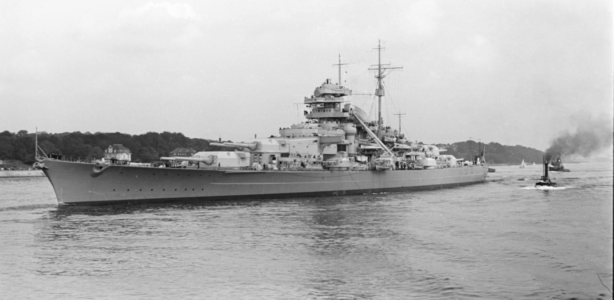

Bismarck  Bismarck, nazwany na cześć Otto von Bismarcka, pancernik klasy Bismarck, razem z Tirpitzem. Budowa zaczęła się w 1936 roku w stoczni Blohm & Voss w Hamburgu. Dopuszczony do służby 24 sierpnia 1940 roku Uzbrojonie główne stanowiło 8 armat kal. 38cm Razem z okrętem siostrzanym - Tirpitzem - były to największe okręty zbudowane przez siłę europejską Brał udział tylko w jednej misji ofensywnej. Operacja Rheinübung, maj 1941, razem z krążownikiem Prinz Eugen walczył w Bitwie o Cieśninę Duńską. Zmierzyli się z angielskimi HMS Hood, który został zatopiony i HMS Prince of Wales. Po 2 dniach, 16 bombowców Swordfish z lotniskowca HMS Ark Royal, przypuściło atak na okręt, krytycznie uszkadzając ster. Bismarck został samozatopiony by nie dostał się w ręce Brytyjczyków
U-47 U-47 - jeden z najbardziej efektywnych Ubootów II Wojny Światowej Budowę rozpoczęto 27 lutego 1937, a do służby wprowadzono w grudniu 1938 roku Odpowiedzialny za zatopienie 31 okrętów i uszkodzenie kolejnych 9 Największe zwycięstwo - podczas swojego drugiego patrolu zatopił pancernik HMS Royal Oak Plasuje się w pierwszej 10 najefektywniejszych Ubootów II Wojny Wziął udział w 10 patrolach, a podczas ostatniego zniknął bez śladu na zachód od Irlandii. Podejrzewa się, że został zatopiony przez niszczyciele HMS Wolverine i HMS Verity, lecz nie ma na to dowodów
USS Lexington (CV-16) USS Lexington, oznaczenie CV-16, lotniskowiec klasy Essex. Nazwany na cześć Bitwy o Lexington z 1775 roku Budowa zaczęła się 15 Czerwca 1941 roku w stoczni Fore River Shipyard w Quincy Dopuszczony do służby 17 lutego 1943 roku Początkowo ochrzczony imieniem Cabot, jednakże w trakcie budowy, USS Lexington (CV-2) został zatopiony, a CV-16 przemianowano na Lexington Był w stanie przenosić 110 samolotów W kwietniu 1947 wycofany ze służby, jednakże w sierpniu 1955 powrócił do służby i pozostał w niej aż do 1992, kiedy został zacumowany w Corpus Christi w Teksasie, gdzie służy jako muzeum. Lexington brał udział w zatopieniu japońskich Musashi, Chitose, Zuiho. A zatopił Zuikaku, Ise oraz Nachi.
USS Missouri (BB-63) USS Missouri - pancernik klasy Iowa o oznaczeniu BB-63. Ostatni pancernik Stanów Zjednoczonych, który wszedł do służby. Budowę rozpoczęto 6 stycznia 1941, a do służby wprowadzono 11 czerwca 1944 roku Na jego pokładzie, 2 września 1945 roku, Mamoru Shigemitsu podpisał kapitulację Cesarstwa Japonii. Wycofany ze służby 26 lutego 1955, wprowadzony ponownie w maju 1986 Po II Wojnie brał udział w wojnie koreańskiej oraz, po modernizacji w 1984 roku, w Operacji Pustynna Burza, kiedy wspomagał ogniem wojska USA Od 1998 roku stacjonuje w Pearl Harbor na Hawajach, jako muzeum.
IJN Shokaku Shokaku - 翔鶴 (Lecący Żuraw), lotniskowiec typu Shokaku, bliźniacza jednostka Zuikaku Budowę rozpoczęto 12 grudnia 1937 w stoczni w Yokosuce, wbrew zapisom Traktatu Waszyngtońskiego, okręt wszedł do służby 8 sierpnia 1941 Był w stanie pomieścić 84 samoloty A6M Zero, D3A Val i B5N Kate Brał udział w atakach na Midway Zatopił ciężkie brytyjskie krążowniki HMS Cornwall, HMS Doretshire oraz lotniskowiec HMS Hermes Ciężko uszkodził USS Enterprise, USS South Dakota, USS Lexington (CV-2), USS Hornet, z czego 2 ostatnie dzięki pomocy Shokaku zatonęły zniszczone przez inne okręty marynarki wojennej Japonii. Został zatopiony 19 czerwca 1944 przez okręt podwodny USS Cavalla
.svg)
.svg)